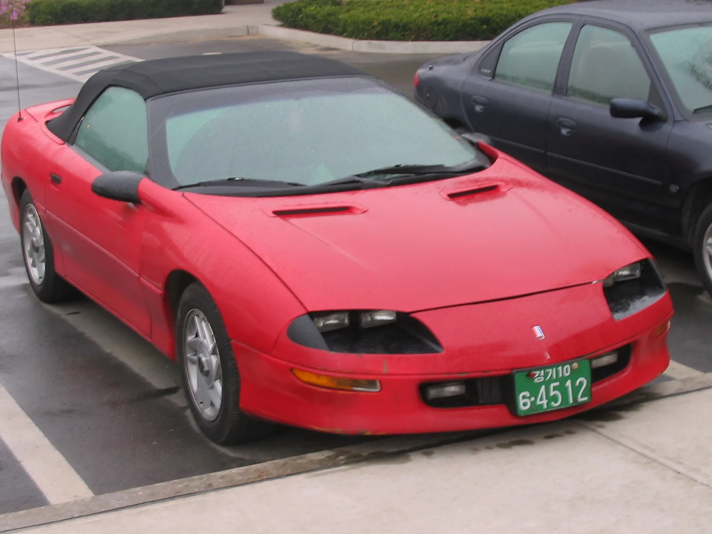
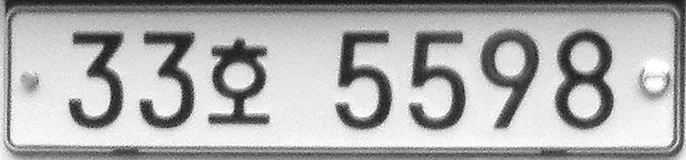

▲ 차량 번호판과 등록원부상 소유자가 실제 운행자와 일치하는지가 대포차 여부를 가르는 첫 기준이다 ⓒ Wikimedia Commons
중고차 시세보다 수백만 원 싼 매물을 발견했다면, 일단 의심부터 해야 한다.
등록원부상 소유자와 실제 운행자가 다른 불법 명의 차량, 이른바 '대포차'일 가능성이 있기 때문이다. 겉모습은 멀쩡한 중고차와 똑같아 보이지만, 이 차를 사는 순간 세금·과태료·범죄 연루라는 예상치 못한 짐을 떠안을 수 있다.
1. 대포차란 무엇인가 — 등록원부와 실제 운행자가 다른 차
대포차는 법률 용어가 아니라 속칭이다. 정식으로는 '불법 명의 자동차'라고 부른다. 국토교통부는 이를 "자동차등록원부상 소유자와 실제 운행자가 다르고, 정상적인 명의이전이나 자동차관리법상 의무보험 가입이 이행되지 않는 자동차"로 정의한다.
| 구분 | 정상 거래 | 대포차 |
|---|---|---|
| 등록원부 소유자 | 구매자 명의로 이전 완료 | 이전 전 소유자(또는 제3자) 명의 그대로 |
| 세금·과태료 | 실제 운행자에게 부과 | 등록원부상 명의자에게 부과 — 운행자는 모름 |
| 의무보험 | 정상 가입 | 미가입 또는 명의자 이름으로만 형식 가입 |
| 사고·범죄 연루 시 | 실제 운전자에게 책임 귀속 | 등록 명의자가 먼저 조사 대상이 될 수 있음 |
KDI 경제정보센터 자료에 따르면, 적발된 대포차 1대당 평균 50건 안팎의 법규 위반이 쌓여 있는 것으로 조사됐다. 세금 체납, 검사 미필, 보험 미가입, 각종 교통법규 위반이 한 차량에 누적되는 구조다.
2. 어떻게 대포차가 되나 — 발생 경위
대포차는 대부분 정상적인 거래가 중간에 끊기면서 생긴다. 처음부터 훔친 차가 아니라, 명의이전 과정에서 서류가 넘어가지 않은 채 실소유자만 계속 바뀌는 경우가 많다.
✅ 대표적인 발생 경위
· 리스·렌터카 미반납 — 약정 기간이 끝났는데도 차량을 반납하지 않고 그대로 되팔거나 계속 운행
· 법인 부도·폐업 — 회사가 없어지면서 명의이전 서류를 넘겨줄 주체 자체가 사라진 경우
· 사채 담보 차량 — 차를 담보로 돈을 빌렸다가 갚지 못해 사채업자가 회수, 명의이전 서류 미교부 조건으로 중고 시장에 되파는 경우
· 과태료·세금 누적 — 차량에 쌓인 과태료·세금이 매매가와 맞먹거나 넘어서 정상적인 이전이 사실상 불가능해진 경우

▲ '허' 글자가 들어간 번호판은 렌터카를 뜻한다 — 리스·렌터카 미반납은 대포차 발생의 대표적인 경로다 ⓒ Wikimedia Commons
📍 판 사람도, 산 사람도 안전하지 않다
대포차를 넘겨준 원래 명의자도 형사 책임에서 자유롭지 않다. 명의를 대여하거나 불법 유통에 관여한 경우 적발 시 함께 처벌 대상이 될 수 있다는 점이 여러 법률 상담 사례로 확인된다.
3. 실제 피해 사례 — 싼값에 산 차가 부메랑이 되는 순간
가장 흔한 피해는 두 갈래다. 하나는 대포차인 줄 모르고 산 구매자, 다른 하나는 명의만 남아있는 원래 소유자다.
| 피해자 | 실제로 벌어지는 일 |
|---|---|
| 모르고 구매한 사람 | 차량 운행정지·번호판 영치 명령이 내려지면 차를 갑자기 못 타게 됨. 지불한 매매대금도 돌려받기 어려운 경우가 많음 |
| 등록원부상 명의자 | 본인이 타지도 않는 차의 세금·과태료·범칙금이 계속 청구됨. 차량이 범죄에 연루되면 경찰 조사 대상이 되기도 함 |
| 선의의 제3자 | 대포차가 교통사고를 내면 의무보험 미가입 상태라 피해 보상이 지연되거나 축소될 수 있음 |
실제로 경남경찰청은 2026년 6월, 한 중고차 매매업자(50대)가 2020년 7월부터 2026년 2월까지 5년 7개월에 걸쳐 태국인 등 외국인 구매자들에게 대포차 268대를 명의이전 없이 유통해온 사실을 확인하고 구속했다고 밝혔다. 배우자인 태국인이 매수인을 소개하면 전국 각지로 차량을 탁송하는 방식이었다. 경찰 수사 결과 이 중 243대가 전국에서 속도위반 등으로 1,543차례 무인단속에 적발됐고, 여기서 발생한 체납 과태료만 1,056건, 약 6,600만 원에 달했다 — 모두 등록원부상 매매상사 명의로 청구된 금액이다. 이 사건은 애초 외국인 운전자의 사고 후 도주 사건을 수사하던 경찰이 사고 차량이 매매상사 명의로 등록된 사실을 이상하게 여기면서 적발됐다. 싼값에 넘겨받은 구매자들 상당수는 뒤늦게 번호판 영치·운행정지 통보를 받고서야 문제를 인지했다.
▲ 계약서 없이, 명의이전 서류 없이 키만 건네받는 거래는 대포차일 위험이 크다 ⓒ Wikimedia Commons
4. 구별법과 확인 절차 — 계약 전 이것만은 확인하자
대포차는 겉모습만으로는 구분이 안 된다. 반드시 서류와 시세를 함께 확인해야 한다.
✅ 계약 전 필수 확인 사항
· 자동차등록원부(갑구·을구) 확인 — 매도인이 등록원부상 소유자와 동일인인지, 압류·저당이 잡혀있지 않은지 대조
· 시세 대비 지나치게 저렴한 가격 — 같은 연식·주행거리 매물 대비 수백만 원 이상 싸다면 일단 의심
· 차량등록 주소지와 실제 거래 장소 불일치 — 등록원부상 주소와 매도인 거주지·매매 장소가 크게 다르면 주의
· 명의이전 서류 즉시 교부 여부 — "서류는 나중에 주겠다"는 조건은 대포차의 전형적인 패턴
· 번호판 종류 확인 — 렌터카(허·하·호)·리스 차량 번호판인데 개인 간 직거래로 나온 매물은 반납 여부를 반드시 확인
📍 정식 매매업체를 통한 거래가 가장 안전하다
개인 간 직거래는 등록원부 확인을 구매자가 직접 해야 하는 부담이 크다. 이전등록 대행까지 책임지는 정식 매매업체를 이용하면, 명의이전이 완료될 때까지 대금 지급을 미루는 방식으로 위험을 줄일 수 있다.
5. 발견 시 신고 방법 — 자동차365와 안전신문고
대포차 신고는 신고 주체에 따라 창구가 다르다. 본인 명의 차량이 대포차로 굴러다니는 걸 알게 된 소유자와, 의심 차량을 발견한 제3자의 절차가 나뉜다.
| 신고 주체 | 신고 경로 | 절차 |
|---|---|---|
| 등록 소유자 (본인 명의 차량을 남이 타는 경우) | 자동차365 온라인 민원 | 공동인증서 로그인 → 민원찾아요 → 온라인민원신청 → 불법운행자동차 신고 (근거: 자동차관리법 제24조의2) |
| 제3자 (의심 차량을 발견한 경우) | 안전신문고 앱 | 앱 실행 → 자동차·교통 위반 메뉴 선택 → 사진·동영상 첨부 후 제출. 우수 신고자에게 상품권·마일리지 등 포상 혜택, 허위 신고 시 과태료 |
| 범죄 연루 의심 | 경찰청(112) · 관할 지자체 등록관청 | 전국 지자체 등록관청에 '대포차 신고접수 센터' 운영(2013년 6월~), 경찰청·교통안전공단·손해보험협회 등과 상시 협력 체계로 단속 |
본인 명의 차량의 불법 운행자를 신고하려면 자동차365에서 절차를 확인할 수 있다. 자동차365 바로가기
▲ 대포차 범죄 연루가 의심되면 112 신고와 함께 관할 등록관청에도 알려야 한다 ⓒ Wikimedia Commons
6. 적발되면 어떤 처벌을 받나
대포차 관련 처벌은 2024년 자동차관리법 개정으로 한층 강화됐다. '몰랐다'는 이유로 책임을 피하기는 점점 어려워지고 있다.
✅ 대포차 관련 자동차관리법 처벌 기준
· 등록 없이 운행하거나 자기 명의 이전 없이 제3자에게 양도·알선 — 3년 이하 징역 또는 3천만 원 이하 벌금 (제79조)
· 정당한 사유 없이 이전등록 미신청 — 2년 이하 징역 또는 2천만 원 이하 벌금 (제80조), 다만 실무에서는 대부분 범칙금(10만~50만 원) 통고처분으로 종결
· 정당한 사용자가 아닌 자의 운행 — 1년 이하 징역 또는 1천만 원 이하 벌금 (제81조)
· 운행정지 명령 위반 — 100만 원 이하 벌금 (제82조)
· 원 명의자 — 명의를 넘겨주거나 대여한 사실이 확인되면 자동차관리법 위반 및 공범 혐의로 조사받을 수 있음
📍 안전행정부·경찰청·교통안전공단 합동 단속 상시화
안전행정부(현 행정안전부)와 17개 시·도, 경찰청, 한국도로공사, 한국교통안전공단, 보험개발원, 손해보험협회 등은 대포차 단속 방법·일정·결과를 상시 협의·시행하는 협력 체계를 운영하고 있다. 적발 시 번호판 영치와 세금 체납분 공매 처분까지 이어지는 경우가 많다.
7. 요약
대포차는 등록원부상 소유자와 실제 운행자가 다른 불법 명의 차량이다. 리스·렌터카 미반납, 법인 부도, 사채 담보 차량의 재유통이 대표적인 발생 경위다.
시세보다 지나치게 싼 매물, 명의이전 서류를 나중에 주겠다는 조건은 대포차를 의심해야 할 신호다. 계약 전 반드시 자동차등록원부에서 매도인과 소유자가 일치하는지 확인해야 한다.
본인 명의 차량이 대포차로 유통 중이라면 자동차365에서, 의심 차량을 발견했다면 안전신문고 앱으로 신고할 수 있다. 적발 시 불법 양도·알선은 3년 이하 징역, 대포차 운행은 1년 이하 징역까지 가능한 만큼, 가격이 아무리 매력적이어도 서류 확인 없이는 계약하지 않는 것이 최선이다.